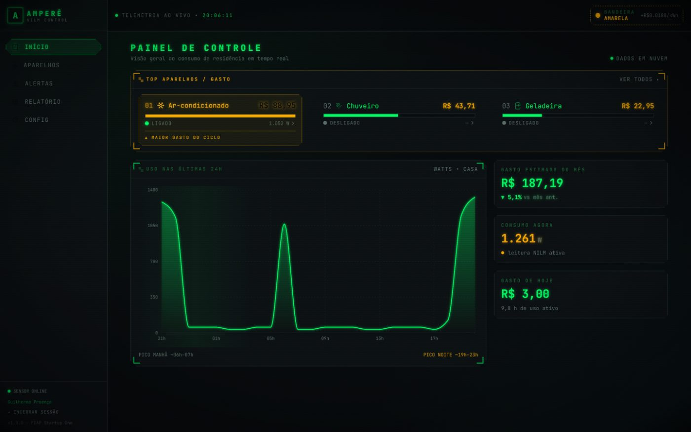
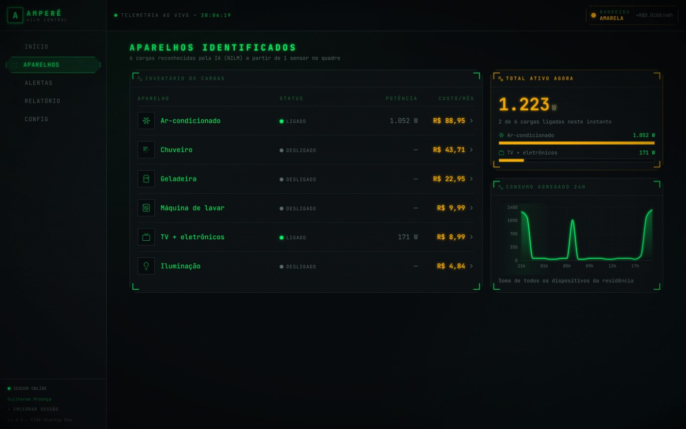
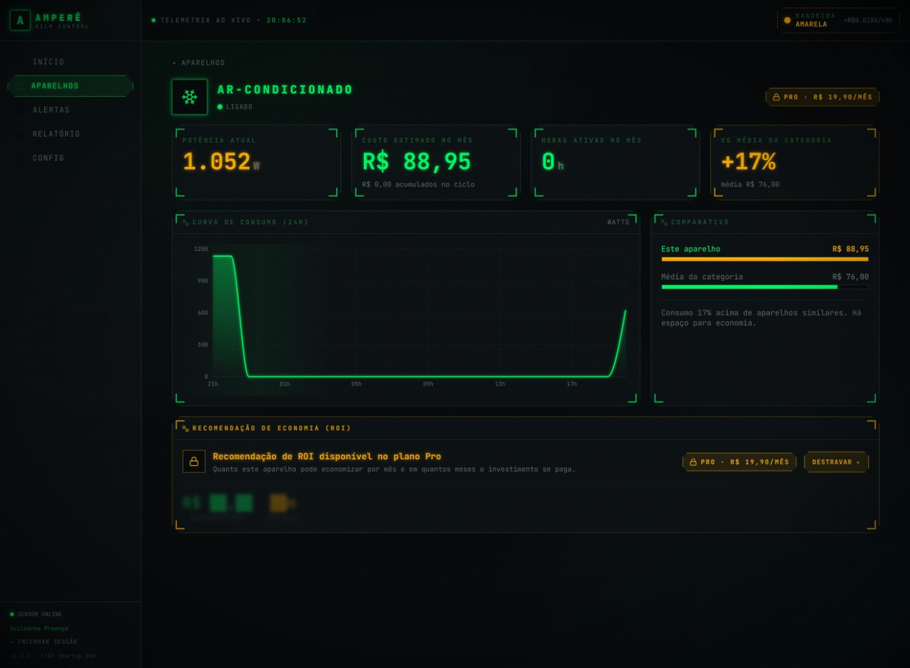

FACULDADE DE INFORMÁTICA E ADMINISTRAÇÃO PAULISTA — FIAP
Startup One
EDUARDA QUAGLIARELI SHIRATSU — RM 551188
GUILHERME COSTA PROENÇA — RM 98937
HUGO ANTÔNIO DE OLIVEIRA — RM 550153
AMPERÊ: MONITORAMENTO DE ENERGIA ELÉTRICA RESIDENCIAL POR APARELHO COM DESAGREGAÇÃO NÃO INTRUSIVA DE CARGAS
São Paulo
2026
EDUARDA QUAGLIARELI SHIRATSU — RM 551188
GUILHERME COSTA PROENÇA — RM 98937
HUGO ANTÔNIO DE OLIVEIRA — RM 550153
AMPERÊ: MONITORAMENTO DE ENERGIA ELÉTRICA RESIDENCIAL POR APARELHO COM DESAGREGAÇÃO NÃO INTRUSIVA DE CARGAS
Documentação final de Trabalho de Conclusão de Curso apresentada à Faculdade de Informática e Administração Paulista (FIAP), como requisito parcial de avaliação da disciplina Startup One, do curso de Engenharia de Software, turma 4SIOA.
São Paulo
2026
A conta de energia elétrica residencial brasileira chega uma vez por mês como um valor fechado, sem discriminar o consumo por aparelho. Pesquisa de campo conduzida por este grupo, com 18 respondentes da classe média urbana de São Paulo, apurou que 78% não sabem quais aparelhos consomem mais energia em suas residências e 89% não conseguem quantificar esse consumo, embora 94% declarem tentar economizar. O problema, portanto, não é ausência de disposição para economizar, mas ausência de informação acionável. Este trabalho apresenta o Amperê, sistema de monitoramento energético residencial baseado em Non-Intrusive Load Monitoring (NILM): um único sensor de corrente instalado no quadro elétrico mede o consumo agregado da residência, e um detector de degraus de potência separa desse sinal o consumo de cada aparelho, apresentando o resultado em reais. O produto foi implementado como aplicação web publicada, com front-end em React, API em Node.js e banco de dados PostgreSQL gerenciado, e seu motor de desagregação alcançou recall de 93,6% e precisão de 99,0% em janela de 30 dias de dados. A documentação compreende a validação do problema por formulário e entrevistas, o dimensionamento do mercado residencial brasileiro a partir de dados da Empresa de Pesquisa Energética, a análise competitiva pelas cinco forças de Porter e por matriz SWOT, o modelo de negócios em Business Model Canvas, a análise financeira com ponto de equilíbrio e projeção de cinco anos, a descrição técnica do protótipo e o plano de entrada no mercado. Entre os achados, destaca-se a invalidação da hipótese de aceitação natural de assinatura mensal, que levou à adoção de modelo híbrido com receita de hardware e plano gratuito.
Palavras-chave: eficiência energética; monitoramento não intrusivo de cargas; NILM; startup; internet das coisas.
A fatura de energia elétrica residencial é, no Brasil, um documento de síntese. Ela informa o total de quilowatt-hora consumidos no ciclo, aplica tarifa e tributos e apresenta um valor a pagar. O que ela não informa — e não tem como informar, dada a tecnologia de medição instalada — é a destinação desse consumo: quanto foi do chuveiro, quanto do ar-condicionado, quanto da geladeira. O morador recebe o resultado de trinta dias de decisões sem qualquer discriminação das decisões que o produziram.
Essa característica cria um problema de informação que antecede e condiciona qualquer problema de custo. Quem não sabe de onde vem o gasto não tem como agir sobre ele com eficácia, e passa a agir por suposição. É esse deslocamento — de um problema aparentemente financeiro para um problema efetivamente informacional — que delimita a oportunidade deste trabalho.
A Pesquisa de Posse de Equipamentos e Hábitos de Uso (PPH), conduzida pelo Programa Nacional de Conservação de Energia Elétrica em 18.775 domicílios distribuídos por 166 municípios, é a fonte mais ampla sobre conhecimento energético residencial no país e levanta, entre outros aspectos, a consciência dos moradores sobre uso eficiente de energia (PROCEL, 2019).
Levantamento conduzido pela Bulbe Energia em março de 2025, com 500 consumidores, indica que, embora oito em cada dez brasileiros analisem a conta de luz todos os meses, metade enfrenta dificuldade para compreendê-la. A maior confusão está na diferença entre o consumo registrado e o valor cobrado, apontada por 48% dos respondentes, e 41% declaram não compreender plenamente o funcionamento das bandeiras tarifárias. A busca ativa por esclarecimento é reduzida: cerca de 24% procuram explicações sobre valores, tarifas e tributos (BULBE ENERGIA, 2025). A maioria limita-se a comparar o valor final com o dos meses anteriores.
Existe, porém, demanda latente por essa informação. O mesmo levantamento registra volume expressivo de consultas na internet de brasileiros procurando descobrir o que mais consome energia em casa, concentradas em eletrodomésticos de cozinha, ar-condicionado e chuveiro. Há, portanto, interesse manifesto por um dado que a infraestrutura atual de medição não entrega.
A literatura acadêmica sugere que a correção desse déficit informacional não é automática. Huse, Lucinda e Cardoso (2020), utilizando dados da PPH, concluíram que o Programa Brasileiro de Etiquetagem produziu apenas aumento modesto na valorização dos custos energéticos pelos consumidores, que subestimam tais custos antes e depois da implementação do programa, de modo que o programa não eliminou o chamado gap de eficiência energética. Os autores encontraram respostas heterogêneas entre estratos demográficos, com as famílias menos informadas sendo as mais prejudicadas.
A relevância do problema é proporcional ao peso da despesa, e esse peso é distribuído de forma desigual. Estudo do Instituto de Estudos Socioeconômicos sobre injustiça energética indica que famílias chefiadas por homens brancos de alta renda consomem em média 262,72 kWh mensais, contra 102,84 kWh das famílias chefiadas por homens negros de baixa renda — diferença de 2,5 vezes. Entre as famílias de baixa renda, as chefiadas por mulheres negras comprometem 11,57% da renda total com energia elétrica, percentual que pode alcançar 13% em cenário de bandeira vermelha (INESC, 2024).
A percepção de custo elevado, contudo, é transversal às faixas de renda. Pesquisa Datafolha encomendada pela Associação Brasileira dos Comercializadores de Energia, realizada por telefone com 2.081 entrevistados em 130 municípios, apurou que oito em cada dez brasileiros consideram a energia elétrica cara ou muito cara — o maior percentual da série iniciada em 2014, quando o índice era de 67% (ABRACEEL, 2021).
O achado mais consequente da pesquisa de campo conduzida por este grupo, cuja metodologia e resultados completos constam da seção 4, é a distância entre o que o morador supõe e o que de fato ocorre. Entre os 18 respondentes, 71% percebiam o chuveiro elétrico como o maior consumidor da residência. A medição realizada pelo próprio sistema desenvolvido neste trabalho, sobre o perfil de consumo calibrado com os valores levantados em campo, atribui ao ar-condicionado R$ 89,00 por mês contra R$ 42,00 do chuveiro, em uma conta total de R$ 187,04.
A literatura adiciona nuance relevante a esse contraste. Dados da PPH sistematizados pela Empresa de Pesquisa Energética indicam que, do primeiro ao nono decil de renda, a geladeira é o aparelho de maior consumo absoluto, e somente no décimo decil o ar-condicionado a supera — comportamento explicado pela posse média do equipamento, que varia de 0,04 unidade por domicílio na faixa de até um salário mínimo a 0,83 unidade na faixa acima de vinte salários mínimos (EPE, 2023).
A consequência prática é direta: o morador que reduz o tempo de banho está agindo sobre o segundo ou terceiro item de sua própria conta, enquanto o primeiro permanece intocado, e não dispõe de meio para perceber o equívoco. A pesquisa de campo registrou que 94% dos respondentes tentam economizar energia, mas nenhum mencionou qualquer forma de monitoramento ou dado como instrumento dessa tentativa. Há disposição para agir sem instrumento que oriente a ação.
Síntese do problema. O consumo residencial de energia elétrica é medido de forma agregada e comunicado de forma mensal, o que impede a atribuição do gasto a aparelhos específicos. A consequência não é apenas o custo, mas a impossibilidade de decisão informada: o morador age por suposição, com frequência sobre o aparelho errado, e não dispõe de meio para verificar o resultado da própria ação.
O Amperê é um sistema de monitoramento energético residencial que identifica o consumo de cada aparelho a partir de um único sensor de corrente instalado no quadro elétrico, apresentando o resultado em reais. A proposta de valor, tal como enunciada ao usuário final, é descobrir quanto cada aparelho custa na conta de luz com um sensor apenas, sem obra e sem substituição de tomadas.
A técnica empregada denomina-se Non-Intrusive Load Monitoring (NILM), ou monitoramento não intrusivo de cargas. O princípio é o seguinte: o sensor mede apenas a potência total da residência, mas essa potência total não varia de forma contínua. Quando uma carga é acionada, a potência agregada apresenta um salto cujo tamanho corresponde à potência daquela carga; quando a carga é desligada, a potência cai na mesma proporção.
O motor de desagregação implementado neste trabalho analisa essa série temporal, identifica os degraus e associa cada degrau à faixa de potência conhecida dos aparelhos catalogados, atribuindo o evento ao aparelho correspondente. Dessa forma, obtém-se o consumo individualizado sem instalar um sensor por tomada. O detalhamento técnico, incluindo o tratamento de cargas compostas e os limites conhecidos do método, consta da seção 9.
Três decisões de projeto sustentam a proposta, e todas as três decorrem de achados da validação descrita na seção 4.
a) Apresentação em reais, não em quilowatt-hora. Na pesquisa de campo, quando perguntados sobre a funcionalidade mais útil, os respondentes escolheram ver o gasto em reais em tempo real acima de ver o consumo por aparelho. A unidade técnica não orienta decisão doméstica; o valor monetário orienta. Todo número apresentado pelo produto é convertido para moeda corrente, considerando a tarifa e a bandeira tarifária vigentes.
b) Um sensor, não um por tomada. É o que a técnica NILM permite e o que viabiliza a instalação em minutos no quadro elétrico, em contraste com a aquisição e configuração de dezenas de tomadas inteligentes. Essa decisão responde também à barreira de adoção identificada nas entrevistas, em que a complexidade de instalação apareceu como objeção recorrente.
c) Indicação de ação, não apenas de número. O produto informa que determinado aparelho responde por determinada fração da conta e indica o que fazer a respeito, com estimativa de retorno. A validação registrou desconfiança quanto ao retorno — formulada por respondentes como dúvida sobre se haveria economia efetiva —, o que tornou a demonstração de retorno um requisito e não um adicional.
A delimitação do escopo é parte da definição da solução. O Amperê não é um sistema de geração de energia, não substitui o medidor da distribuidora e não promete percentual de economia: o sistema mede e aponta, e a economia depende de decisão do morador. Não se destina, na fase atual, a consumidores comerciais e industriais, que demandam medição trifásica e proposta comercial distinta. O estado atual de implementação, com as funcionalidades já operantes e as pendências reconhecidas, está descrito na seção 9.
A startup é conduzida por três integrantes, com atribuições definidas conforme o quadro 1. A distribuição reflete a divisão de trabalho efetivamente praticada ao longo do desenvolvimento do projeto.
Quadro 1 — Composição da equipe e atribuições
| Integrante | Função | Atribuições |
|---|---|---|
| Guilherme Costa Proença RM 98937 |
Diretor de tecnologia e encarregado de proteção de dados | Arquitetura da solução, modelagem do banco de dados, implementação do motor de desagregação e da API. Responde pelas requisições de titulares de dados pessoais e pela manutenção do registro das operações de tratamento, conforme designação formal registrada no planejamento de adequação à Lei Geral de Proteção de Dados. |
| Hugo Antônio de Oliveira RM 550153 |
Engenharia de dados e segurança da informação | Ingestão e qualidade da telemetria, simulação do dispositivo, levantamento de riscos de segurança sobre o código da aplicação e definição do plano de auditoria. |
| Eduarda Quagliareli Shiratsu RM 551188 |
Marketing e produto | Pesquisa de campo e validação de hipóteses, posicionamento e narrativa da marca, plano de mídia e aquisição de usuários, condução dos testes de usabilidade. |
Fonte: elaborado pelos autores (2026).
Cabe registrar que, em uma equipe de três integrantes, há acúmulo de papéis, e esse acúmulo tem consequência de governança. A designação do responsável técnico como encarregado de proteção de dados, por exemplo, configura potencial conflito de interesse, uma vez que a mesma pessoa responde pela arquitetura que trata os dados e pela defesa dos direitos dos titulares. A medida mitigadora adotada é procedimental: a comunicação de incidente de segurança exige deliberação dos três integrantes, e não decisão individual do encarregado.
Esta seção apresenta a pesquisa de campo conduzida para verificar se as suposições construídas pelo grupo se sustentam do ponto de vista do cliente potencial. O objetivo não foi coletar opiniões favoráveis, mas submeter as hipóteses a dados capazes de invalidá-las — e, como se verá, três hipóteses foram efetivamente invalidadas, com consequência direta sobre o modelo de negócios descrito na seção 7.
Registra-se que a pesquisa foi aplicada quando o projeto adotava a denominação bgkubu, posteriormente alterada para Amperê. Os instrumentos e resultados são os mesmos; apenas a denominação do produto mudou.
A formulação das hipóteses partiu da matriz Certezas, Suposições e Dúvidas (CSD), construída em etapa anterior do projeto. Dessa matriz derivaram nove hipóteses submetidas a verificação, organizadas em três grupos: a existência e a natureza do problema (H1 a H5), a disposição de pagamento e o canal de entrega (H6 e H7) e as premissas de modelo comercial e adoção (H8 e H9). O quadro 2 apresenta o enunciado de cada hipótese.
Quadro 2 — Hipóteses submetidas à validação
| Código | Enunciado |
|---|---|
| H1 | A invisibilidade energética é um problema real e disseminado. |
| H2 | O cliente sofre emocionalmente com a conta de energia. |
| H3 | Existe interesse em conhecer o consumo por aparelho. |
| H4 | Usuários raciocinam em reais, e não em quilowatt-hora. |
| H5 | O trabalho a ser feito pelo cliente é obter controle e explicação, mais do que economia pura. |
| H6 | O usuário pagaria pela solução. |
| H7 | O aplicativo móvel é o canal principal de entrega da informação. |
| H8 | A assinatura mensal seria naturalmente aceita. |
| H9 | A instalação seria uma barreira secundária. |
Fonte: elaborado pelos autores (2026), a partir da matriz CSD do projeto.
A validação foi estruturada em duas frentes complementares, de naturezas distintas e com funções distintas.
Formulário on-line. Aplicou-se formulário estruturado a 18 respondentes da classe média urbana de São Paulo, com perfil aderente ao problema investigado. O instrumento abordou perfil domiciliar, consciência sobre o consumo, dor associada à conta, comportamento de economia, interesse na informação por aparelho e disposição de pagamento. A função desta frente foi medir incidência e frequência.
Entrevistas em profundidade simuladas. Realizaram-se oito entrevistas em profundidade simuladas, com roteiro semiestruturado, construídas pelo grupo a partir de perfis aderentes ao público investigado. Cada entrevista define idade, ocupação, tipo de moradia, valor da conta de energia e perfil socioeconômico, e desenvolve diálogo sobre emoção, contexto de uso, barreiras de adoção e disposição de pagamento. A função desta frente foi explorar motivos, contexto e linguagem.
A natureza simulada das entrevistas é explicitada aqui por exigência de honestidade metodológica, e impõe limite interpretativo preciso: as entrevistas não constituem evidência empírica sobre a população, mas instrumento de estruturação de hipóteses e de antecipação de objeções. Toda conclusão quantitativa deste trabalho apoia-se no formulário e nas fontes secundárias citadas na seção 5; as entrevistas são utilizadas para interpretar e qualificar esses achados, nunca para substituí-los.
A combinação dos dois métodos justifica-se porque cada um responde a um tipo diferente de dúvida. O formulário permite dimensionar quantos respondentes compartilham determinada condição; o roteiro de entrevista permite compreender por que a compartilham e o que fariam diante de uma solução. Reconhece-se, ainda, a limitação de amostra: 18 respondentes de um único recorte geográfico e socioeconômico não autorizam inferência estatística para a população brasileira, e por essa razão o dimensionamento de mercado da seção 5 recorre a fontes oficiais de abrangência nacional.
Entre os 18 respondentes, 94% pagam conta de energia elétrica, o perfil etário concentra-se entre 25 e 50 anos (72%), 56% residem em apartamentos e 67% dividem o domicílio com três ou mais pessoas. A concentração em domicílios maiores é relevante porque associa-se a consumo mais alto e, por consequência, a maior pressão financeira da conta. A predominância de apartamentos tem efeito direto sobre a estratégia de instalação do sensor no quadro elétrico, aspecto retomado em H9.
As duas primeiras perguntas de conteúdo mediram o núcleo do problema. O gráfico 1 apresenta os resultados.
Gráfico 1 — Consciência sobre o consumo por aparelho (n = 18)
Fonte: dados da pesquisa (2026).
O segundo resultado é o mais expressivo do instrumento. A distinção entre as duas perguntas é importante: o respondente pode suspeitar de quais aparelhos pesam mais — e 22% afirmam saber —, mas apenas 11% conseguem converter essa suspeita em valor. O intervalo entre suspeitar e quantificar é precisamente o espaço que a desagregação de cargas ocupa.
Esse resultado converge com a literatura. A PPH, aplicada a 18.775 domicílios, documenta o baixo conhecimento sobre uso eficiente de energia na população brasileira (PROCEL, 2019), e o estudo de Huse, Lucinda e Cardoso (2020) conclui que o consumidor brasileiro subestima sistematicamente custos energéticos.
O gráfico 2 reúne os indicadores de dor e de comportamento declarado.
Gráfico 2 — Dor associada à conta e comportamento de economia (n = 18)
Fonte: dados da pesquisa (2026).
A leitura conjunta desses cinco indicadores sustenta a tese central do trabalho. A dor é vivencial e recorrente, não hipotética: 83% já foram surpreendidos pelo valor da conta. Existe engajamento, e não indiferença: 56% verificam a fatura mensalmente. Existe disposição para agir: 94% declaram tentar economizar. E o incômodo declarado não se resume ao valor: metade dos respondentes aponta especificamente o desconhecimento sobre o que consome mais, e 44% a falta de clareza da fatura.
Dois achados qualitativos reforçam a interpretação. Quanto ao sentimento diante de uma conta mais alta que o esperado, predominaram frustração, impotência e tentativa de corte sem direção — a resposta mais frequente expressando simultaneamente irritação e desconhecimento sobre como agir. Quanto às estratégias de economia declaradas, todas se mostraram genéricas e intuitivas, como desligar aparelhos e reduzir o tempo de banho, e nenhum respondente mencionou monitoramento ou dado como instrumento. Confirma-se a formulação da seção 1: há disposição para agir sem instrumento que oriente a ação.
O gráfico 3 apresenta o interesse na informação e a disposição declarada de pagamento, cujo contraste constitui o achado mais importante da validação.
Gráfico 3 — Interesse na informação e disposição de pagamento (n = 18)
Fonte: dados da pesquisa (2026). Faixa intermediária de preço obtida por complemento.
O interesse pela informação é expressivo: 78% desejam conhecer o consumo por aparelho sem qualquer condicionante, e o único respondente que declarou não ter interesse reside sozinho e paga menos de R$ 100 mensais, situando-se fora do segmento-alvo definido na seção 5.
A disposição de pagamento, contudo, não acompanha o interesse. Apenas 39% declararam disposição firme de pagar, contra o critério de 70% que o próprio grupo havia estabelecido na matriz CSD como limiar de validação. Somando as respostas afirmativas e condicionais chega-se a 83%, mas resposta condicional não constitui receita. E o dado de faixa de preço é mais restritivo ainda: 53% aceitariam pagar no máximo R$ 10 mensais, e somente 13% admitem valores acima de R$ 30.
Consequência sobre o modelo de negócios. O preço do plano Pro do Amperê é de R$ 19,90 mensais — valor que, segundo este instrumento, apenas uma minoria dos respondentes aceitaria. A conclusão extraída não foi ajustar a pesquisa ao preço, mas reformular o modelo: adotou-se estrutura híbrida em que a receita de hardware responde pela aquisição, um plano gratuito entrega o diagnóstico completo e a assinatura cobra pela prescrição, dirigida à minoria que já experimentou valor. O detalhamento consta das seções 7 e 8.
Perguntados sobre a funcionalidade mais útil, os respondentes elegeram ver o gasto em reais em tempo real acima de ver o consumo por aparelho, com destaque também para alertas de consumo elevado. O achado determinou decisão de produto descrita em 2.2: toda grandeza apresentada pelo sistema é convertida em moeda, e a unidade técnica aparece apenas como informação secundária.
As respostas em campo aberto produziram cinco demandas não previstas no instrumento, relacionadas no quadro 3.
Quadro 3 — Demandas identificadas em campo aberto
| Demanda | Formulação e desdobramento |
|---|---|
| Transparência da fatura | Respondentes pedem explicação dos tributos, não apenas o total cobrado. |
| Notificação proativa | Desejo de ser alertado antes do fechamento da conta, o que originou a funcionalidade de projeção do mês. |
| Comparação com vizinhos | Comparação social emergiu espontaneamente. A literatura registra que o retorno normativo produz reduções persistentes de consumo (SCHULTZ et al., 2019). |
| Desconfiança quanto ao retorno | Formulações como “não sei se vai mesmo economizar” indicam que a demonstração de retorno precisa ser central na comunicação. |
| Resistência à instalação | Moradores de apartamento questionaram quem realizaria a instalação no quadro elétrico. Barreira não dimensionada, retomada em H9. |
Fonte: dados da pesquisa (2026).
As oito entrevistas simuladas, com as ressalvas metodológicas estabelecidas em 4.2, exploraram quatro dimensões que o formulário não alcança.
Natureza da dor. As entrevistas reposicionaram o problema: a dor central não é pagar caro, mas não compreender a variação da conta nem saber como agir. Em um dos perfis, o valor atribuído ao produto esteve explicitamente na capacidade de mostrar quanto se economizou em reais ao alterar o uso do ar-condicionado — isto é, no retorno verificável da própria decisão, e não no número absoluto.
Trabalho a ser realizado. O trabalho que o cliente contrata não é economizar energia, mas obter controle, compreender o consumo e decidir de forma consciente. Emergiram trabalhos complementares não previstos: separar consumo pessoal e profissional, no caso de profissionais autônomos; utilizar a informação como instrumento de educação financeira familiar; dirimir conflitos domésticos sobre responsabilidade pelo consumo; e empregar o monitoramento como etapa anterior à decisão de instalar geração solar.
Barreiras de adoção. O preço não é a barreira principal. Apareceram com força a desconfiança quanto à eficácia, o receio de instalação complexa, a necessidade de prova social, a restrição em imóveis alugados e a preocupação com usabilidade para perfis menos técnicos. Validar o problema, portanto, não equivale a validar a compra.
Disposição de pagamento por hardware. Para aquisição única, os valores admitidos pelos perfis distribuíram-se entre R$ 100 e R$ 600, com concentração entre R$ 200 e R$ 500 — intervalo substancialmente mais alto que o admitido para assinatura mensal. O contraste entre as duas disposições, medida uma pelo formulário e explorada a outra pelas entrevistas, é o fundamento do modelo híbrido.
As entrevistas abriram, ainda, quatro frentes estratégicas incorporadas ao plano: síndicos e administradoras como canal business-to-business; o produto como etapa anterior ao investimento em energia solar; funcionalidade de retorno sobre investimento por aparelho; e demanda, no público técnico, por integração com plataformas de automação residencial e interface de programação aberta.
Confrontadas as nove hipóteses com os resultados, obteve-se a classificação do quadro 4.
Quadro 4 — Situação das hipóteses após a validação
| Cód. | Situação | Evidência |
|---|---|---|
| H1 | Validada | 78% não sabem quais aparelhos consomem mais; 89% não quantificam. |
| H2 | Validada | 83% já se surpreenderam com a conta; predominam frustração e impotência. |
| H3 | Validada | 78% manifestaram interesse direto na informação. |
| H4 | Validada | “Gasto em reais em tempo real” superou “consumo por aparelho”. |
| H5 | Validada | Recorrência, nas entrevistas, do controle e da explicação como motivação. |
| H6 | Parcialmente validada | Disposição firme de 39%, abaixo do critério de 70% do CSD. |
| H7 | Parcialmente validada | Perfis jovens e técnicos valorizam o aplicativo; perfis menos técnicos exigem simplicidade maior. |
| H8 | Invalidada | 53% aceitam no máximo R$ 10 mensais; preferência declarada por compra única. |
| H9 | Invalidada | Instalação apareceu como objeção relevante em apartamentos e imóveis alugados. |
| — | Invalidada | Percepção de que o chuveiro é o maior consumidor, sustentada por 71% dos respondentes, contrariada pela medição do sistema. |
Fonte: elaborado pelos autores (2026), a partir dos dados da pesquisa.
O problema foi validado de forma consistente. A invisibilidade do consumo por aparelho é real, disseminada e emocionalmente onerosa, e o interesse pela informação que a solução entrega é majoritário. As cinco hipóteses relativas à existência e à natureza do problema foram confirmadas tanto pelo formulário quanto pelas fontes secundárias.
A validação do problema, entretanto, não validou o modelo comercial originalmente previsto, e é esse o resultado de maior valor da etapa. A hipótese de aceitação natural da assinatura mensal foi invalidada; a disposição firme de pagamento ficou em 39% contra o critério de 70%; e a instalação, antes tratada como barreira secundária, revelou-se objeção relevante. Uma pesquisa que apenas confirmasse as intenções prévias do grupo teria valor reduzido: a utilidade desta está precisamente nas três hipóteses que derrubou, cada uma das quais produziu alteração no produto ou no modelo — a estrutura híbrida de receita, o plano gratuito e a prioridade dada à simplicidade de instalação.
Permanecem como dúvidas abertas, a serem resolvidas com o produto em operação e não por nova pesquisa declaratória: a conversão efetiva do plano gratuito para o plano pago, a viabilidade de instalação sem apoio profissional e a receptividade do canal condominial.
O mercado-alvo do Amperê é o domicílio residencial brasileiro conectado à rede de distribuição, com recorte inicial nas regiões de maior consumo médio e nas faixas de renda em que a conta de energia é significativa sem ser restritiva. Esta seção dimensiona esse mercado a partir de fontes oficiais e delimita as parcelas endereçável e acessível.
A classe residencial responde por 31,0% do consumo total de energia elétrica do país. No primeiro semestre de 2025, esse consumo somou 90.861 GWh, contra 90.024 GWh no mesmo período de 2024, variação de 0,9% (EPE, 2025). O número de unidades consumidoras residenciais alcançou 83.470.520 em junho de 2025, com acréscimo de 1.626.789 unidades em doze meses, equivalente a 2,0%. A tabela 1 apresenta a distribuição regional.
Tabela 1 — Unidades consumidoras residenciais e consumo médio, por região (junho de 2025)
| Região | Consumidores | Variação anual | Consumo médio (kWh/mês) |
|---|---|---|---|
| Norte | 5.476.536 | +2,7% | 217,1 |
| Nordeste | 22.872.318 | +2,5% | 134,9 |
| Sudeste | 36.801.294 | +1,2% | 182,8 |
| Sul | 11.771.344 | +2,6% | 209,8 |
| Centro-Oeste | 6.549.028 | +2,9% | 214,4 |
| Brasil | 83.470.520 | +2,0% | 178,2 |
Fonte: adaptado de EPE (2025).
O consumo residencial médio nacional situou-se em 178,2 kWh mensais em junho de 2025, com leve retração de 0,2% em relação ao mesmo mês do ano anterior, atribuída pela própria publicação a clima mais ameno e consequente redução do uso de climatização (EPE, 2025). Para o ano-base 2024, o Anuário Estatístico registra consumo residencial total de 176.519 GWh, equivalentes a 31,4% do consumo nacional de eletricidade, e 82,9 milhões de unidades consumidoras residenciais em dezembro de 2024, correspondentes a 88,0% do total de consumidores do país, com acréscimo superior a 1,7 milhão de unidades no ano (EPE, 2025b).
O consumo médio por consumidor residencial em 2024 cresceu em todas as regiões: 220,3 kWh mensais no Norte (+7,7%), 136,2 kWh no Nordeste (+3,9%), 183,8 kWh no Sudeste (+4,4%), 208,0 kWh no Sul (+4,6%) e 215,1 kWh no Centro-Oeste (+5,9%). A comparação com os valores de junho de 2025 da tabela 1 deve considerar que estes últimos são medição de um único mês de inverno, quando a demanda por climatização é menor.
O crescimento do número de consumidores residenciais desacelerou ao longo da série histórica: de 3,3% ao ano no período 2010–2014 para 2,2% ao ano entre 2015 e 2025 (EPE, 2025). Ainda assim, trata-se de base ampliando-se em cerca de 1,6 milhão de unidades por ano, o que significa que o mercado endereçável cresce independentemente de conquista de participação.
Quanto ao valor da fatura, o projeto adota como premissa a tarifa efetiva de R$ 0,86885 por quilowatt-hora, composta pela tarifa de R$ 0,85 acrescida da bandeira amarela. Trata-se de premissa do trabalho, e não de tarifa média apurada por órgão oficial. Aplicada ao consumo médio nacional de 178,2 kWh, resulta conta média da ordem de R$ 154,80 mensais — valor inferior à âncora de R$ 187,04 utilizada no protótipo, o que é coerente, pois o perfil-alvo definido a seguir consome acima da média nacional.
O produto compete também por orçamento na categoria de automação residencial. Projeção da Statista estima a receita do mercado brasileiro de smart home em aproximadamente US$ 2,9 bilhões em 2028 (STATISTA, 2023). Para a América do Sul, a mesma base projeta crescimento de 10,97% entre 2024 e 2028, com volume de US$ 4,6 bilhões ao fim do período, e penetração domiciliar evoluindo de 11,6% para 21,4% (STATISTA, 2024).
Dois registros de cautela acompanham esses números. O primeiro é que a projeção de receita brasileira data de 2023 e não incorpora a conjuntura dos anos seguintes. O segundo, mais relevante para este trabalho, é que a penetração de 11,6% refere-se à América do Sul, e não exclusivamente ao Brasil: trata-se de indicador regional, utilizado aqui como ordem de grandeza e não como medida do mercado nacional.
O que esses dados sustentam é modesto, e convém não exceder o que sustentam: a categoria cresce a dois dígitos sobre uma base de penetração baixa. Isso significa espaço de expansão, mas também que o mercado ainda não está formado — o que, para o Amperê, é simultaneamente a oportunidade descrita em 6.1 e a ameaça registrada na matriz SWOT. A validação da seção 4 oferece evidência mais próxima do problema concreto do que qualquer projeção setorial: 94% dos respondentes tentam economizar energia e nenhum utiliza dado ou monitoramento como instrumento.
O dimensionamento adota como unidade de receita de entrada o preço proposto para o Amperê Node, de R$ 299,00, cuja justificativa consta da seção 8.5. A receita recorrente não é considerada, por depender de taxa de conversão ainda não observada em operação. As premissas de recorte estão explicitadas porque determinam o resultado.
Quadro 5 — Dimensionamento do mercado
| Camada | Definição e premissa | Domicílios | Potencial de receita de hardware |
|---|---|---|---|
| TAM mercado total |
Todas as unidades consumidoras residenciais do país (EPE, jun. 2025). | 83.470.520 | R$ 25,0 bilhões |
| SAM mercado endereçável |
Sudeste, Sul e Centro-Oeste, somando 55.121.666 unidades, restritas às classes B1, B2 e C1, que representam 55,3% dos domicílios da Grande São Paulo (ABEP, 2024) — proporção aqui aplicada às três regiões. O corte em C1 decorre da renda domiciliar média da classe, de R$ 3.980,38, abaixo da qual a aquisição do equipamento deixa de ser plausível. | 30.482.281 | R$ 9,1 bilhões |
| SOM mercado acessível |
Captura de 0,1% do SAM em cinco anos, compatível com estrutura de aquisição de startup em estágio inicial e sem aporte relevante. | 30.482 | R$ 9,1 milhões |
Fonte: elaborado pelos autores (2026), a partir de EPE (2025) e ABEP (2024).
A premissa mais frágil do quadro 5 é a aplicação, às três regiões, da distribuição de classes observada na Grande São Paulo, que é a região metropolitana de maior renda do país. Trata-se de extrapolação, adotada por ausência de distribuição de faixa de conta por região nas fontes consultadas, e que tende a superestimar o SAM nas áreas menos urbanizadas. O SOM, por sua vez, não é derivado do SAM por participação desejada, mas limitado pela capacidade de aquisição demonstrada na projeção financeira da seção 8.
O perfil do domicílio-alvo, cruzando as fontes, caracteriza-se por conta mensal entre R$ 150 e R$ 400, consumo entre 180 e 400 kWh mensais, três ou mais moradores, posse de ar-condicionado — equipamento cuja posse média varia de 0,04 unidade por domicílio na faixa de até um salário mínimo a 0,83 na faixa acima de vinte salários mínimos (EPE, 2023) — e localização em capital ou região metropolitana. Para contas acima de R$ 250 mensais, o consumo necessário aproxima-se de 290 a 310 kWh, aproximadamente 60% a 70% acima da média do Sudeste apurada para 2024.
A análise estrutural do setor segue o modelo de Porter (1979), que avalia a atratividade de um mercado pela intensidade de cinco forças competitivas. O quadro 6 sintetiza a avaliação, detalhada nos parágrafos seguintes.
Quadro 6 — Síntese das cinco forças competitivas
| Força | Intensidade | Fundamento |
|---|---|---|
| Rivalidade entre concorrentes | Baixa a moderada | Não há marca brasileira dominante em monitoramento residencial; a maior empresa do setor atua apenas em comercial e industrial. |
| Ameaça de novos entrantes | Alta | Barreira tecnológica baixa; protótipo acadêmico funcional foi construído por R$ 73,51. |
| Poder dos fornecedores | Baixa | Componentes padronizados e múltiplas fontes; infraestrutura em nuvem substituível. |
| Poder dos compradores | Alta | Custo de troca nulo, produto discricionário e disposição de pagamento medida em 39%. |
| Ameaça de substitutos | Moderada a alta | Tomadas inteligentes, medidores de quadro, aplicativos da distribuidora e a própria inação. |
Fonte: elaborado pelos autores (2026), com base em Porter (1979).
Rivalidade entre concorrentes existentes — baixa a moderada. Não se identificou marca brasileira dominante em monitoramento energético residencial de residência inteira. A maior empresa nacional do segmento de monitoramento atende exclusivamente os mercados comercial e industrial e declara não atender o residencial, apesar de identificar demanda. As soluções importadas enfrentam carga tributária de importação e disponibilidade limitada. A rivalidade é baixa porque o espaço está vazio — o que é oportunidade e alerta simultaneamente, pois mercado vazio pode significar mercado não validado.
Ameaça de novos entrantes — alta. É a força mais desfavorável. A barreira tecnológica é baixa: um protótipo acadêmico brasileiro demonstrou monitor residencial funcional construído por R$ 73,51 com microcontrolador ESP32 e sensor de corrente. Os componentes são padronizados e a infraestrutura em nuvem é acessível a qualquer entrante. A defesa do Amperê não pode residir no hardware, e sim na qualidade do algoritmo de desagregação, na base de dados acumulada para treiná-lo e na marca — ativos que se constroem com tempo e operação, não com capital inicial.
Poder de barganha dos fornecedores — baixo. O microcontrolador e o sensor de corrente são componentes de prateleira com múltiplos fornecedores. O provedor de banco de dados e hospedagem é substituível, embora a migração tenha custo: a dependência atual de um único provedor gerenciado constitui risco operacional registrado no planejamento de governança do projeto.
Poder de barganha dos compradores — alto. O comprador é individual e não concentrado, o que isoladamente reduziria seu poder, mas três fatores o elevam: o produto é discricionário, não essencial; o custo de troca é praticamente nulo, pois abandonar o serviço não acarreta perda relevante; e a disposição de pagamento medida na validação é limitada, com 39% de disposição firme e 53% admitindo no máximo R$ 10 mensais. O comprador pode simplesmente não comprar, e essa é a alternativa mais provável.
Ameaça de produtos substitutos — moderada a alta. O substituto mais relevante não é um produto, mas a inação: o morador pode continuar estimando o consumo por suposição, como 94% já fazem sem instrumento. Entre os produtos, as tomadas inteligentes com medição, a partir de R$ 79, resolvem parcialmente o problema a custo baixo; os medidores de quadro entregam o total da residência; e os aplicativos das distribuidoras oferecem, gratuitamente, a informação agregada. Nenhum substitui a desagregação por aparelho, mas todos competem pela mesma percepção de necessidade.
O quadro 7 compara as alternativas disponíveis ao consumidor brasileiro, considerando preços de varejo consultados em novembro de 2026.
Quadro 7 — Quadro comparativo de concorrentes e substitutos
| Solução | Preço | Método de medição | Entrega ao usuário | Limitação frente ao Amperê |
|---|---|---|---|---|
| Amperê | R$ 299 (único) + R$ 19,90/mês opcional | Um sensor no quadro; desagregação por software | Custo por aparelho, em reais, com indicação de ação | — |
| Emporia Vue 3 | US$ 99,99 a US$ 199,99, importado | Uma pinça por circuito monitorado | Consumo por circuito | Resolve por hardware: exige um sensor por circuito e intervenção maior no quadro. Circuito não equivale a aparelho. |
| Shelly EM / 3EM | R$ 650 a R$ 985 | Um sensor no quadro | Consumo total da residência | Entrega o agregado, que é a informação que o usuário já possui pela fatura. |
| Módulos genéricos | R$ 94 a R$ 105 | Um sensor no quadro | Consumo total | Mesma limitação, sem suporte nem garantia de marca. |
| Tomadas inteligentes | R$ 79 a R$ 149 por unidade | Medição na tomada | Consumo do aparelho conectado | Cobertura parcial: não alcança chuveiro, ar-condicionado embutido nem iluminação. Custo cresce com o número de aparelhos. |
| Aplicativo da distribuidora | Gratuito | Leitura do medidor | Consumo total, periodicidade mensal | Não desagrega e não é tempestivo. |
| Sense | Não comercializado no Brasil | Um sensor; desagregação por software | Consumo por aparelho | É o concorrente mais próximo em método, mas não há evidência de disponibilidade no mercado brasileiro. |
Fonte: elaborado pelos autores (2026), a partir de consulta a varejo e a material dos fabricantes em novembro de 2026.
Duas observações qualificam o quadro. Primeira: a descrição do Emporia Vue informa identificação de aparelhos de alto consumo por meio de sensores em nível de circuito, método distinto da desagregação por software — a comparação direta entre as duas abordagens exigiria teste controlado, não realizado neste trabalho. Segunda: a faixa de preço dos substitutos de quadro, de R$ 580 a R$ 985, situa-se acima do preço proposto para o Amperê Node, o que converte o preço em argumento de posicionamento e não apenas em variável de custo.
Quadro 8 — Matriz SWOT do Amperê
| Forças | Fraquezas |
|---|---|
|
|
| Oportunidades | Ameaças |
|
|
Fonte: elaborado pelos autores (2026).
O cruzamento das quadrantes orienta três decisões estratégicas. A combinação entre a lacuna competitiva e a baixa barreira de entrada indica que a janela de oportunidade é temporária, e que a vantagem defensável precisa ser construída no algoritmo e na base de dados, não no dispositivo. A combinação entre a resistência à assinatura e a ausência de base real de clientes recomenda priorizar a receita de hardware e tratar a recorrência como hipótese a validar em operação. E a sensibilidade à percepção de vigilância, somada ao tratamento de dados de rotina doméstica, torna a política de privacidade um elemento de produto, e não apenas de conformidade — razão pela qual a seção 9.5 a documenta.
O modelo de negócios é representado pelo Business Model Canvas proposto por Osterwalder e Pigneur (2011), cujos nove blocos descrevem a lógica pela qual a organização cria, entrega e captura valor. A figura 1 apresenta o quadro preenchido; os parágrafos seguintes explicam cada bloco e sua origem nas evidências levantadas.
Figura 1 — Business Model Canvas do Amperê
| 8. Parcerias-chave Fornecedores de componentes (ESP32, sensor SCT-013) Montadora para o lote de produção Provedor de nuvem e banco gerenciado Síndicos e administradoras de condomínio Eletricistas e lojas de material elétrico, como canal de indicação Instaladores de energia solar |
7. Atividades-chave Desenvolvimento e melhoria do algoritmo de desagregação Operação da plataforma em nuvem Produção de conteúdo e aquisição Suporte à instalação |
2. Proposta de valor Descubra quanto cada aparelho custa na sua conta de luz — com um sensor só, sem obra e sem trocar tomada. Custo por aparelho em reais, não em kWh Projeção do fechamento do mês Alerta de consumo fora do padrão Indicação de ação com retorno estimado |
4. Relacionamento Autosserviço pelo painel Relatório mensal automático Comunidade de usuários Suporte por canal autenticado Programa de indicação |
1. Segmentos de clientes Núcleo: famílias de classe B e C em capitais e regiões metropolitanas, conta de R$ 150 a R$ 400, três ou mais moradores, com ar-condicionado Primeiros adotantes: perfil técnico-curioso, com automação residencial Secundário: condomínios, via síndicos Fora do escopo: comércio e indústria |
| 6. Recursos-chave Algoritmo de desagregação e a base de dados que o treina Plataforma publicada Equipe técnica Marca e conteúdo |
3. Canais Busca orgânica e páginas por aparelho Vídeo curto em redes sociais Marketplaces Indicação entre vizinhos Assembleias de condomínio |
|||
| 9. Estrutura de custos Variáveis: custo do Node (R$ 118 por unidade); custo de servir o assinante (R$ 2,38 ao mês, somando taxa de pagamento, infraestrutura e suporte); aquisição de clientes (R$ 145 por cliente adquirido por mídia paga) Fixos: infraestrutura em nuvem, contabilidade, ferramentas, suporte em meio período e pró-labore a partir do sétimo mês |
5. Fontes de receita Receita única: venda do Amperê Node. O preço proposto é de R$ 299, situado dentro da faixa de disposição de pagamento medida nas entrevistas e abaixo dos substitutos de quadro, que custam de R$ 580 a R$ 985 Receita recorrente: plano Pro a R$ 19,90 mensais, com recomendação de retorno por aparelho, histórico estendido e exportação Plano gratuito: entrega o diagnóstico completo e não gera receita direta; existe porque a pesquisa mediu resistência à assinatura |
|||
Fonte: elaborado pelos autores (2026), com base em Osterwalder e Pigneur (2011).
Segmentos de clientes. O recorte deriva do dimensionamento da seção 5 e do perfil dos respondentes: domicílios com três ou mais moradores, nos quais a posse de ar-condicionado eleva a conta acima da média regional. Os primeiros adotantes de perfil técnico foram identificados no teste de usabilidade, quando participantes desse perfil ignoraram o resumo e buscaram o inventário completo de cargas.
Proposta de valor. Detalhada em 7.2. A formulação enfatiza o custo em reais porque essa foi a funcionalidade mais valorizada no formulário, e enfatiza a ausência de obra porque a instalação apareceu como barreira na validação.
Canais e relacionamento. Os canais partem da constatação de que o público não busca pela tecnologia, e sim pela dor: as consultas registradas referem-se ao que consome mais em casa, não a monitoramento não intrusivo. O relacionamento apoia-se no relatório mensal, que é simultaneamente entrega de valor e mecanismo de retenção.
Fontes de receita. A estrutura híbrida é a resposta direta ao achado da seção 4. A receita de hardware captura valor no momento em que a disposição de pagamento é maior, e a assinatura cobra pela prescrição, dirigida à parcela que já experimentou o diagnóstico.
Recursos e atividades-chave. O recurso defensável não é o dispositivo, replicável a baixo custo, mas o algoritmo e a base de dados que permitem aprimorá-lo — conclusão extraída da análise de entrantes potenciais em 6.1.
O mapa da proposta de valor, instrumento complementar ao Canvas, confronta o perfil do cliente com a oferta (OSTERWALDER et al., 2014). O quadro 9 apresenta esse confronto, com cada item referenciado à evidência que o sustenta.
Quadro 9 — Mapa da proposta de valor
| Perfil do cliente | Oferta do Amperê |
|---|---|
Tarefas a realizar
|
Produtos e serviços
|
Dores
|
Analgésicos
|
Ganhos esperados
|
Criadores de ganho
|
Fonte: elaborado pelos autores (2026), com base em Osterwalder et al. (2014) e nos dados da pesquisa.
A persona foi construída a partir do perfil predominante no formulário — faixa de 25 a 50 anos, apartamento, três ou mais moradores — e dos elementos qualitativos levantados nas entrevistas simuladas descritas em 4.4.
Quadro 10 — Perfil social da persona
| Nome e idade | Mariana, 34 anos |
|---|---|
| Ocupação | Analista de recursos humanos, contratada em regime integral, com trabalho remoto três dias por semana |
| Composição familiar | Mora com o cônjuge e um filho de seis anos |
| Moradia | Apartamento alugado de três dormitórios, em bairro residencial de São Paulo |
| Classe | B2, conforme Critério Brasil |
| Conta de energia | R$ 380 no verão e R$ 240 no inverno |
| Equipamentos | Ar-condicionado no dormitório e na sala, geladeira frost-free, chuveiro elétrico, máquina de lavar |
| Comportamento | Organizada financeiramente: registra os gastos domésticos em planilha e acompanha a variação mês a mês |
Fonte: elaborado pelos autores (2026).
Quadro 11 — Mapa de empatia
| O que pensa e sente | O que vê |
|---|---|
| Sente que a conta de verão é sempre uma surpresa desagradável. Suspeita do ar-condicionado, mas não tem como confirmar. Incomoda-se por registrar os gastos com disciplina e, ainda assim, não conseguir explicar a variação da maior despesa variável da casa. | Uma fatura com um único valor e nenhuma discriminação. Conteúdos genéricos na internet, que informam que o chuveiro é vilão e a geladeira consome muito, sem dizer quanto o seu chuveiro e a sua geladeira consomem. |
| O que ouve | O que fala e faz |
| Recomendações da família e de vizinhos para reduzir o banho e desligar aparelhos da tomada. Comparações informais do tipo “na minha casa veio mais barato”, sem base de cálculo. | Reduz o uso do ar-condicionado por estimativa, sem saber o efeito. Observa a conta cair e não consegue distinguir o resultado da própria decisão da influência do clima. |
| Dores | Ganhos |
| Decidir no escuro. Não ter como verificar se a ação funcionou. Sensação de impotência diante de uma despesa relevante do orçamento familiar. | Ver, em reais, quanto economizou ao alterar um hábito. Transformar uma suposição em número verificável. Recuperar a sensação de controle. |
Fonte: elaborado pelos autores (2026), a partir das entrevistas simuladas.
Quadro 12 — Mapa da jornada do usuário
| Etapa | Ação | Ponto de contato | Emoção | Oportunidade |
|---|---|---|---|---|
| Descoberta | Recebe conta acima do esperado e procura na internet o que mais consome em casa | Busca orgânica; vídeo curto em rede social | Frustração e irritação | Responder exatamente à pergunta feita, com página por aparelho |
| Consideração | Usa a calculadora gratuita e vê o custo estimado do próprio aparelho | Página pública do produto | Surpresa e curiosidade | Entregar valor antes de pedir cadastro |
| Decisão | Compara com tomadas inteligentes e medidores de quadro; hesita quanto à instalação | Página de produto; avaliações; vídeo de instalação | Desconfiança | Demonstrar a instalação em dois minutos e exibir prova social |
| Compra | Adquire o Node, com três meses de plano Pro incluídos | Comércio eletrônico próprio ou marketplace | Expectativa | Prazo de entrega declarado, sem promessa que não se cumpra |
| Instalação | Fixa o sensor no quadro e conecta à rede sem fio | Guia de instalação; suporte | Insegurança, depois alívio | Primeiro aparelho identificado em até 48 horas, que é a métrica de ativação |
| Primeiro valor | Vê o ranking e descobre que o maior gasto não é o que supunha | Painel | Surpresa e satisfação | Momento de maior disposição para indicar o produto |
| Uso contínuo | Acompanha a projeção do mês e recebe alertas | Painel; notificações | Controle | Converter em plano Pro com recomendação de retorno |
| Encantamento | Recebe o relatório mensal com a economia acumulada e indica a vizinhos | Relatório; programa de indicação | Recompensa | Reduzir o custo de aquisição pelo canal de menor custo |
Fonte: elaborado pelos autores (2026).
Esta seção avalia a viabilidade econômica do modelo descrito na seção 7. A análise confronta dois cenários: o cenário base, que adota o preço e o mix de aquisição definidos na fase anterior do projeto, e o cenário ajustado, que incorpora a disposição de pagamento efetivamente medida na validação. A planilha completa consta do Apêndice A, preenchida com o cenário ajustado.
Apenas dois valores deste capítulo estão fixados por evidência direta: o preço do plano Pro, de R$ 19,90 mensais, validado no teste de usabilidade, e a conta média do segmento, de R$ 187, levantada em campo. Os demais são premissas de trabalho, relacionadas no quadro 13 para que possam ser contestadas individualmente.
Quadro 13 — Premissas do modelo financeiro
| Premissa | Valor | Base e forma de validação |
|---|---|---|
| Custo do Node | R$ 118,00 | Estimativa de componentes, montagem, embalagem e frete. Validar com cotação e lote mínimo. |
| Custo de servir o assinante | R$ 2,38/mês | Taxa de pagamento (R$ 1,18), infraestrutura (R$ 0,40) e suporte (R$ 0,80). |
| Churn mensal da assinatura | 4% | Referência de assinatura de consumo; implica vida média de 25 meses. |
| Conversão para o plano Pro | 12% | Meta definida no projeto. É a premissa mais exposta, pela resistência medida à assinatura. |
| Custo de aquisição por mídia paga | R$ 145,00 | Estimativa. Apenas campanha real mede. |
| Curva de novos clientes (ano 1) | 1.595 clientes | 15, 25, 40, 60, 85 e 120 no primeiro semestre, conforme projeção anterior, e 150, 180, 205, 225, 240 e 250 no segundo. É a premissa mais frágil. |
| Alíquota de tributos sobre a receita | 5% | Simplificação: o modelo trata a operação como prestação de serviços. A venda de hardware teria tributação distinta. |
Fonte: elaborado pelos autores (2026).
Registra-se uma correção em relação ao modelo da fase anterior, que não incluía retirada dos sócios e, por omissão, melhorava artificialmente o resultado. O modelo atual inclui pró-labore de R$ 3.000 mensais, para os três integrantes, a partir do sétimo mês.
A margem de contribuição do hardware, ao preço de R$ 199, é de R$ 81,00 por unidade, equivalentes a 40,7% da receita. A margem da assinatura é de R$ 17,52 mensais, ou 88,0% da receita, proporção típica de software, em que servir um assinante adicional custa pouco mais que a taxa de pagamento.
É neste ponto que os dois cenários divergem, e a divergência decorre de uma inconsistência identificada no modelo anterior. Aquele modelo projetava receita de assinatura sobre a totalidade dos clientes adquiridos, tratando cada comprador de hardware como assinante permanente, embora o mesmo documento estabelecesse meta de conversão de 12% do plano gratuito para o pago. As duas premissas não podem coexistir.
Adotando-se a conversão de 12%, coerente com a resistência à assinatura medida na seção 4, e considerando que 30% dos clientes são adquiridos por canais orgânicos — o que produz custo de aquisição misto de R$ 101,50 —, o valor do cliente ao longo da vida passa a ser:
LTV = margem do hardware + conversão × margem da assinatura × vida média
LTV = 81,00 + 0,12 × 17,52 × 25 = R$ 133,56
LTV / CAC = 133,56 / 101,50 = 1,32
A relação de 1,32 situa-se muito abaixo da referência de mercado, usualmente fixada em 3,0, e o retorno do investimento em aquisição leva 9,8 meses. O cenário base, portanto, não remunera adequadamente o capital aplicado em crescimento.
A projeção do cenário base, apresentada na tabela 2, demonstra consequência mais severa do que a simples ausência de lucro: como a margem de contribuição por cliente é inferior ao custo de adquiri-lo, o prejuízo cresce à medida que a operação cresce. Não há ponto de equilíbrio a ser alcançado por volume; o volume afasta o equilíbrio.
Tabela 2 — Projeção de cinco anos no cenário base (Node a R$ 199)
| Ano | Receita bruta | Custo direto | Despesas | Resultado |
|---|---|---|---|---|
| 1 | 332.469 | 190.012 | 205.438 | −79.603 |
| 2 | 664.939 | 421.826 | 380.394 | −170.528 |
| 3 | 1.097.149 | 772.574 | 587.335 | −317.618 |
| 4 | 1.371.436 | 1.071.947 | 709.270 | −478.352 |
| 5 | 1.440.008 | 1.249.354 | 737.216 | −618.563 |
Fonte: elaborado pelos autores (2026). Valores em reais.
Duas correções foram necessárias para chegar a esta projeção, ambas relativas ao template da disciplina. A primeira: o template reajusta custo direto e despesas por percentual único, concebido como inflação. Em um negócio em que o hardware representa 57% da receita e a aquisição responde por 78,8% das despesas, ambos acompanham o volume, não a inflação. As taxas foram recalculadas para incorporar o crescimento de vendas. A segunda: a receita do plano Pro passou a incidir sobre a base de assinantes efetiva, e não sobre a base de clientes.
Identificado que o cenário base não se sustenta, a questão deixa de ser quanto o negócio lucra e passa a ser o que precisa mudar para que lucre. A análise de sensibilidade sobre o cenário base indica três caminhos:
As entrevistas mediram disposição de pagamento por aquisição única entre R$ 100 e R$ 600, concentrada entre R$ 200 e R$ 500, enquanto os substitutos de quadro custam de R$ 580 a R$ 985. O preço de R$ 199 situa-se, portanto, abaixo da disposição medida e muito abaixo da concorrência. O cenário ajustado eleva o preço do Node para R$ 299 — ainda inferior à mediana da disposição apurada — e reduz a participação da mídia paga de 70% para 50%, mediante intensificação do conteúdo orgânico e do programa de indicação. Os indicadores tornam-se:
LTV = 181,00 + 0,12 × 17,52 × 25 = R$ 233,56
CAC misto = 145,00 × 0,50 = R$ 72,50
LTV / CAC = 233,56 / 72,50 = 3,22
Tabela 3 — Projeção de cinco anos no cenário ajustado (Node a R$ 299)
| Ano | Receita bruta | Custo direto | Despesas | Resultado |
|---|---|---|---|---|
| 1 | 491.969 | 190.012 | 159.183 | 118.177 |
| 2 | 983.939 | 421.826 | 287.884 | 225.032 |
| 3 | 1.623.499 | 772.574 | 435.632 | 334.118 |
| 4 | 2.029.373 | 1.071.947 | 520.706 | 335.252 |
| 5 | 2.130.842 | 1.249.354 | 539.619 | 235.327 |
Fonte: elaborado pelos autores (2026). Valores em reais.
No cenário ajustado o resultado é positivo desde o primeiro ano, e o ponto de equilíbrio operacional é alcançado com aproximadamente 20 unidades mensais, volume suficiente para cobrir a média das despesas fixas. A retração do resultado no quinto ano não decorre de perda de mercado, e sim da estrutura de premissas: o crescimento de vendas desacelera para 5% enquanto o reajuste de custo direto permanece em 11% ao ano, de modo que a margem comprime. Trata-se de alerta do modelo, não de previsão: indica que, por volta do quarto ano, a operação precisará renegociar o custo do componente ou deslocar a receita para a assinatura, cuja margem é de 88%.
Conclusão da análise financeira. O produto é tecnicamente viável e o problema que resolve está validado, mas o modelo de receita concebido antes da pesquisa não se sustentava: ao preço de R$ 199 e com conversão de 12% para a assinatura, cada cliente adquirido custa mais do que a margem que gera, e o crescimento aprofunda o prejuízo. A correção não está em vender mais, e sim em capturar valor onde a pesquisa demonstrou que o cliente aceita pagar — na aquisição do equipamento. Esse é o resultado prático mais relevante da validação descrita na seção 4.
O protótipo não é maquete: trata-se de aplicação publicada e operante, com ciclo completo entre a aquisição do sinal elétrico e a apresentação do custo por aparelho ao usuário autenticado. Esta seção descreve as funcionalidades essenciais, a arquitetura, o desempenho medido do motor de desagregação, as telas e os controles de privacidade e segurança.
O quadro 14 relaciona as funcionalidades do produto completo, indicando o que já está implementado e o que permanece no roteiro de evolução. A distinção é registrada porque condiciona o que a comunicação do produto pode prometer.
Quadro 14 — Funcionalidades do produto e situação de implementação
| Funcionalidade | Situação | Descrição |
|---|---|---|
| Cadastro e autenticação | Implementada | Conta própria com sessão persistida e revalidada a cada requisição. |
| Ingestão de telemetria | Implementada | Recebimento de leituras de potência agregadas em janelas de 15 minutos, com autenticação própria do dispositivo. |
| Desagregação por aparelho | Implementada | Identificação de eventos de acionamento e desligamento por detecção de degraus de potência. |
| Painel de consumo | Implementada | Gasto estimado do mês, consumo instantâneo e ranking de aparelhos por custo, com destaque para o maior gasto do ciclo. |
| Detalhe por aparelho | Implementada | Custo estimado no mês, horas ativas e curva de potência do equipamento. |
| Alertas | Implementada | Notificação de consumo fora do padrão, com limiar relativo ao ritmo de cada aparelho. |
| Relatório mensal | Implementada | Fechamento do ciclo com economia acumulada frente à média dos ciclos anteriores. |
| Recomendação de retorno | Implementada | Estimativa de economia por substituição ou mudança de hábito, restrita ao plano Pro. |
| Dispositivo físico | Pendente | O equipamento está em montagem. A telemetria atual provém de simulador que publica no mesmo endpoint, com o mesmo formato e a mesma autenticação previstos para o firmware. |
| Modelo treinado de desagregação | Pendente | Substituição do detector heurístico, prevista para elevar a acurácia em cargas simultâneas e de baixa potência. |
| Aplicativo móvel nativo | Pendente | A interface atual é responsiva e acessível por navegador. |
Fonte: elaborado pelos autores (2026).
A arquitetura organiza-se em quatro camadas, descritas no quadro 15. A telemetria percorre o caminho do dispositivo à interface sem que o navegador acesse o banco de dados diretamente.
Quadro 15 — Camadas da arquitetura
| Camada | Tecnologia | Responsabilidade |
|---|---|---|
| Dispositivo | ESP32 e sensor de corrente SCT-013-030 | Medição da corrente total no quadro elétrico e publicação periódica das leituras agregadas. |
| Interface de programação | Node.js, Express e TypeScript | Autenticação, validação de esquema das entradas, motor de desagregação, cálculo de tarifa e bandeira, projeção de fechamento do mês e regras de plano. |
| Persistência | PostgreSQL gerenciado | Modelagem dimensional em esquema estrela, com seis dimensões e dois fatos, funções de agregação em linguagem de consulta e isolamento por usuário em nível de linha. |
| Interface do usuário | React, Vite e TypeScript | Apresentação das telas, atualização periódica e gestão da sessão. |
Fonte: elaborado pelos autores (2026).
Duas decisões de projeto merecem justificativa. A primeira é a existência da camada intermediária: o provedor de banco oferece interface de consulta direta, o que permitiria ao navegador acessar os dados sem intermediação, mas isso implicaria transportar para o cliente a regra de precificação e as regras de plano. A interface de programação existe para que a regra de negócio permaneça em um único lado. A segunda é o isolamento do motor de desagregação atrás de uma abstração: a substituição do detector heurístico por modelo treinado não exige alteração em rota, serviço ou esquema de dados.
O armazenamento adota modelagem dimensional porque as consultas do produto são analíticas — custo por aparelho, por período, por ciclo — e beneficiam-se de funções de janela e de cálculo de percentis, recursos que um armazenamento não relacional não oferece com a mesma economia.
O detector analisa a série de potência agregada, identifica variações abruptas e associa cada variação à faixa de potência característica dos aparelhos catalogados. Quando duas cargas são acionadas em proximidade temporal, produz-se um degrau único correspondente à soma; o algoritmo testa também pares de assinaturas e emite dois eventos quando o par explica a variação de forma nitidamente melhor que uma carga isolada.
O desempenho foi medido sobre janela de 30 dias, com 2.880 amostras. A tabela 4 apresenta o resultado por aparelho.
Tabela 4 — Desempenho do detector por aparelho (30 dias, 2.880 amostras)
| Aparelho | Recall |
|---|---|
| Ar-condicionado | 100,0% |
| Chuveiro elétrico | 100,0% |
| Máquina de lavar | 100,0% |
| Geladeira | 93,7% |
| Televisor e eletrônicos | 80,0% |
| Iluminação | 80,0% |
| Geral | 93,6% (precisão de 99,0%) |
Fonte: dados do projeto (2026).
Os limites conhecidos são registrados: três ou mais cargas simultâneas e o caso em que uma carga é acionada no instante exato em que outra é desligada — produzindo degraus de sinais opostos que se anulam — permanecem sem separação adequada. A superação desses casos exige desagregação por modelo treinado.
A calibração do perfil foi conferida contra as âncoras levantadas em campo. O script de verificação reproduz a aritmética do painel e compara com os valores de referência, obtendo gasto mensal de R$ 187,04 contra âncora de R$ 187,00, com ar-condicionado em R$ 89,00, chuveiro em R$ 42,00 e geladeira em R$ 23,00, todos coincidentes com os respectivos alvos.
As figuras 2 a 4 apresentam capturas do sistema em operação contra o banco de dados em nuvem. A identidade visual adota referência de painel de controle, com tipografia monoespaçada e leitura em alto contraste, escolha orientada à legibilidade de números.
Figura 2 — Painel de controle: gasto do mês, consumo instantâneo e ranking por custo

Fonte: captura do sistema em operação (2026).
Figura 3 — Inventário de cargas identificadas pelo motor de desagregação

Fonte: captura do sistema em operação (2026).
Figura 4 — Detalhe do aparelho, com recomendação de retorno restrita ao plano Pro

Fonte: captura do sistema em operação (2026).
A curva de consumo elétrico de uma residência não constitui dado pessoal sensível na definição do art. 5º, inciso II, da Lei nº 13.709/2018 (BRASIL, 2018), mas apresenta elevado potencial inferencial: permite deduzir rotina de sono, horário de banho, presença ou ausência de moradores e número aproximado de residentes. Por essa razão, o projeto trata esses dados como se sensíveis fossem, adotando minimização de granularidade — agregação em janelas de quinze minutos, nunca amostragem instantânea bruta —, vedação de compartilhamento com terceiros e proibição expressa de venda de dados de consumo.
As bases legais adotadas são a execução de contrato, para o cadastro e a telemetria, por constituírem a função essencial do serviço; o legítimo interesse, para registros de acesso e medidas antifraude; e o consentimento específico e revogável, para comunicação de marketing. Foi designado encarregado de proteção de dados, com canal público de contato, e estabelecido que a comunicação de incidente de segurança é decisão colegiada dos três integrantes, medida destinada a mitigar o conflito de interesse descrito na seção 3.
Entre os controles técnicos já implementados constam autenticação por token validado a cada requisição, isolamento por usuário em nível de linha em todas as tabelas, autenticação própria do dispositivo por chave dedicada, validação de esquema em toda entrada da interface de programação, tráfego cifrado e segredos mantidos fora do repositório. Permanecem pendentes a limitação de taxa nas rotas de autenticação e de ingestão, o registro de auditoria de acessos e operações sensíveis e o armazenamento da chave de dispositivo sob função de resumo criptográfico. Essas pendências foram levantadas por leitura do próprio código, relacionadas ao OWASP Top 10 e priorizadas no roteiro de evolução.
O posicionamento deriva diretamente da validação: quem possui o problema não procura pela tecnologia que o resolve. As consultas registradas referem-se ao que consome mais energia em casa, e não a monitoramento não intrusivo de cargas. A comunicação, portanto, responde à dor, não descreve o método.
A narrativa central do lançamento é enunciada como a sua conta de luz é um número sem nomes, e o Amperê devolve os nomes. O antagonista não é a energia nem a distribuidora, mas a opacidade da informação; o protagonista é o morador, e não o produto; e a transformação prometida é a passagem da surpresa diante da conta para a previsibilidade. A promessa escrita, empregada como título da página pública, é descobrir quanto cada aparelho custa na conta de luz, com um sensor apenas, sem obra e sem trocar tomada.
Três limites são observados na comunicação, derivados das restrições técnicas reconhecidas na seção 9: não se afirma que o dispositivo físico está em produção; não se descreve o motor de desagregação como aprendizado de máquina; e não se promete percentual de economia, uma vez que o sistema mede e aponta, cabendo a decisão ao morador.
A estratégia de atração estrutura-se sobre o princípio de que a isca precisa entregar gratuitamente uma versão reduzida daquilo que o produto entrega. O instrumento é uma calculadora pública de custo por aparelho: o visitante informa o equipamento, o tempo de uso e a tarifa, e recebe o custo mensal estimado sem necessidade de cadastro. O endereço eletrônico só é solicitado após a entrega do valor, para envio do detalhamento, com consentimento específico para comunicação de marketing, separado do aceite dos termos de uso e revogável.
As etapas seguintes compreendem sequência de quatro mensagens eletrônicas, que vai do cálculo solicitado até o convite ao plano gratuito, e a conversão para o plano pago, realizada dentro do produto, quando o usuário já dispõe do diagnóstico na tela e o que resta oferecer é a prescrição. A retenção apoia-se no relatório mensal e em programa de indicação, canal de menor custo em um produto cuja adoção depende de confiança para instalação no domicílio.
Quanto à mídia orgânica, as frentes são páginas de busca dedicadas a cada aparelho de alto consumo, vídeo curto com medição real, conteúdo técnico sobre o método e participação em comunidades de automação residencial. Registra-se que essa frente não é gratuita: consome aproximadamente 23 horas mensais de trabalho dos fundadores, custo que o modelo financeiro reconhece como pró-labore a partir do sétimo mês.
O investimento em mídia paga do primeiro ano, no cenário ajustado da seção 8, totaliza R$ 115.638, correspondentes ao custo de aquisição de R$ 145 aplicado sobre metade dos 1.595 clientes projetados. A redução da participação da mídia paga de 70% para 50% é parte da correção do modelo, e transfere esforço para conteúdo orgânico e indicação. O quadro 16 distribui o investimento por canal.
Quadro 16 — Distribuição do investimento em mídia paga
| Canal | Participação | Etapa do funil | Função |
|---|---|---|---|
| Redes sociais de vídeo curto | 42% | Topo e meio | Alcance por meio da demonstração do custo real de um aparelho, formato de maior potencial e menor custo por mil impressões. |
| Rede de busca | 26% | Fundo | Captura de intenção declarada, com termos de produto e preço. |
| Vídeo em plataforma aberta | 10% | Topo | Demonstração da instalação, dirigida à objeção de complexidade. |
| Influenciadores | 10% | Topo e meio | Prova social, com perfis de nicho e demonstração verificável. |
| Rede profissional | 8% | Meio e fundo | Canal condominial, ativado apenas após existir piloto a apresentar. |
| Remarketing e marketplaces | 4% | Fundo | Recuperação de visitantes e presença onde já há demanda por medidores. |
Fonte: elaborado pelos autores (2026).
O funil projetado para o investimento do primeiro ano parte do número de clientes desejado e retrocede até as impressões necessárias, e não o contrário. Admitindo-se custo por clique de R$ 1,40, uso da calculadora por um quarto dos visitantes, conversão de um quarto dos usos em contato qualificado e conversão de dezesseis por cento desses contatos em compra, o investimento sustenta a captação projetada. Os indicadores de acompanhamento são a ativação em 48 horas, com meta de 70%, a conversão para o plano pago, com meta de 12%, a retenção no trigésimo dia, com meta de 40%, e o custo de aquisição por canal.
Estabelecem-se, por fim, regras de corte escritas antes do início da campanha, para que a decisão não seja tomada sob o efeito de resultados parciais: conjunto de anúncios com custo de aquisição superior a uma vez e meia a meta é desligado; criativo com custo inferior a setenta por cento da meta tem orçamento ampliado; custo por contato qualificado acima do dobro da meta indica problema na página, e não na mídia; e ativação abaixo de cinquenta por cento suspende qualquer ampliação de orçamento, pois adquirir cliente que não ativa consome caixa sem gerar receita recorrente.
ASSOCIAÇÃO BRASILEIRA DE EMPRESAS DE PESQUISA (ABEP). Critério de Classificação Econômica Brasil: alterações na aplicação, válidas a partir de 2024. São Paulo: ABEP, 2024. Disponível em: https://abep.org/wp-content/uploads/2024/09/01_cceb_2024.pdf. Acesso em: 16 nov. 2026.
ASSOCIAÇÃO BRASILEIRA DOS COMERCIALIZADORES DE ENERGIA (ABRACEEL). Pesquisa Datafolha 2021: percepção dos brasileiros sobre o preço da energia elétrica. Brasília: Abraceel, 2021. Pesquisa realizada por telefone com 2.081 entrevistados em 130 municípios. Disponível em: https://abraceel.com.br/blog/2021/08/o-brasileiro-nao-e-livre-live-apresenta-os-dados-da-pesquisa-datafolha-2021/. Acesso em: 16 nov. 2026.
BRASIL. Lei nº 13.709, de 14 de agosto de 2018. Lei Geral de Proteção de Dados Pessoais (LGPD). Brasília, DF: Presidência da República, 2018. Disponível em: https://www.planalto.gov.br/ccivil_03/_ato2015-2018/2018/lei/l13709.htm. Acesso em: 16 nov. 2026.
BULBE ENERGIA. Pesquisa sobre a compreensão da conta de luz pelo consumidor brasileiro. São Paulo: Bulbe Energia, mar. 2025. 500 respondentes. Divulgada por CartaCapital. Disponível em: https://www.cartacapital.com.br/do-micro-ao-macro/8-em-cada-10-brasileiros-tem-dificuldade-para-entender-a-conta-de-luz-aponta-estudo/. Acesso em: 16 nov. 2026.
EMPRESA DE PESQUISA ENERGÉTICA (EPE). Consumo residencial de energia elétrica por classes de renda. Rio de Janeiro: EPE, 2023. Disponível em: https://www.epe.gov.br/sites-pt/publicacoes-dados-abertos/publicacoes/PublicacoesArquivos/publicacao-729/FactSheetConsumoPorClassesDeRenda_Final09032023.pdf. Acesso em: 16 nov. 2026.
EMPRESA DE PESQUISA ENERGÉTICA (EPE). Mercado de energia elétrica: resultados de 2025, 2º trimestre. Rio de Janeiro: EPE, Superintendência de Estudos Econômicos e Energéticos, set. 2025. Disponível em: https://epe.gov.br/sites-pt/areas-de-atuacao/energia-eletrica/WorkshopCOPAM/. Acesso em: 16 nov. 2026.
EMPRESA DE PESQUISA ENERGÉTICA (EPE). Anuário estatístico de energia elétrica 2025: fact sheet, ano-base 2024. Rio de Janeiro: EPE, 2025b. Disponível em: https://www.epe.gov.br/sites-pt/publicacoes-dados-abertos/publicacoes/PublicacoesArquivos/publicacao-160/topico-168/anuario-factsheet.pdf. Acesso em: 16 nov. 2026.
HUSE, C.; LUCINDA, C.; CARDOSO, A. R. Consumer response to energy label policies: evidence from the Brazilian energy label program. Energy Policy, v. 138, art. 111207, mar. 2020.
INSTITUTO DE ESTUDOS SOCIOECONÔMICOS (INESC). Mulheres negras de baixa renda pagam até oito vezes mais pela energia do que homens brancos de renda alta. Brasília: INESC, 2024. Disponível em: https://inesc.org.br/mulheres-negras-de-baixa-renda-pagam-ate-oito-vezes-mais-pela-energia-do-que-homens-brancos-de-renda-alta/. Acesso em: 16 nov. 2026.
OSTERWALDER, A.; PIGNEUR, Y. Business model generation: inovação em modelos de negócios. Rio de Janeiro: Alta Books, 2011.
OSTERWALDER, A.; PIGNEUR, Y.; BERNARDA, G.; SMITH, A. Value proposition design: como construir propostas de valor inovadoras. São Paulo: HSM Editora, 2014.
PORTER, M. E. How competitive forces shape strategy. Harvard Business Review, Boston, v. 57, n. 2, p. 137-145, mar./abr. 1979.
PROGRAMA NACIONAL DE CONSERVAÇÃO DE ENERGIA ELÉTRICA (PROCEL). Pesquisa de posse de equipamentos e hábitos de uso — PPH 2019: classe residencial. Rio de Janeiro: Eletrobras/Procel, 2019. Pesquisa realizada em 18.775 domicílios de 166 municípios, nos 26 estados e no Distrito Federal.
SCHULTZ, P. W. et al. Making the smart meter social promotes long-term energy conservation. Humanities and Social Sciences Communications, v. 5, n. 1, 2019. Disponível em: https://www.nature.com/articles/s41599-019-0254-5. Acesso em: 16 nov. 2026.
STATISTA. Revenue in the smart home market in Brazil 2019-2028. Hamburgo: Statista, 2023. Disponível em: https://www.statista.com/forecasts/887546/revenue-in-the-smart-home-market-in-brazil. Acesso em: 16 nov. 2026.
STATISTA. Smart home — South America. Hamburgo: Statista, 2024. Disponível em: https://www.statista.com/outlook/dmo/smart-home/south-america. Acesso em: 16 nov. 2026.
Este apêndice reproduz o conteúdo da planilha financeira elaborada no template
da disciplina, preenchida com o cenário ajustado descrito na seção 8.5: Amperê
Node a R$ 299,00 e metade dos clientes adquiridos por mídia paga. O arquivo
eletrônico acompanha a entrega sob o nome
apendice-a-planilha-financeira.xlsx, com as fórmulas do template
preservadas.
A tabela 5 apresenta a projeção mensal do primeiro ano. A coluna de assinantes registra a base ativa do plano Pro, calculada com conversão de 12% dos novos clientes e perda mensal de 4% da base existente; a coluna de resultado é líquida de tributos sobre a receita.
Tabela 5 — Projeção mensal do primeiro ano (cenário ajustado)
| Mês | Novos clientes | Assinantes Pro | Receita | Custo direto | Aquisição | Fixos | Resultado |
|---|---|---|---|---|---|---|---|
| 1 | 15 | 2 | 4.525 | 1.775 | 1.088 | 465 | 971 |
| 2 | 25 | 5 | 7.574 | 2.962 | 1.812 | 465 | 1.956 |
| 3 | 40 | 9 | 12.139 | 4.741 | 2.900 | 465 | 3.426 |
| 4 | 60 | 16 | 18.258 | 7.118 | 4.350 | 1.850 | 4.027 |
| 5 | 85 | 26 | 25.932 | 10.092 | 6.162 | 1.850 | 6.531 |
| 6 | 120 | 39 | 36.656 | 14.253 | 8.700 | 1.850 | 10.020 |
| 7 | 150 | 56 | 45.964 | 17.833 | 10.875 | 6.100 | 8.858 |
| 8 | 180 | 75 | 55.312 | 21.418 | 13.050 | 6.100 | 11.978 |
| 9 | 205 | 97 | 63.225 | 24.421 | 14.862 | 6.100 | 14.681 |
| 10 | 225 | 120 | 69.663 | 26.836 | 16.312 | 6.100 | 16.932 |
| 11 | 240 | 144 | 74.626 | 28.663 | 17.400 | 6.100 | 18.732 |
| 12 | 250 | 168 | 78.093 | 29.900 | 18.125 | 6.100 | 20.064 |
| Ano | 1.595 | 168 | 491.969 | 190.012 | 115.638 | 43.545 | 118.177 |
Fonte: elaborado pelos autores (2026). Valores em reais.
O investimento pré-operacional é de R$ 4.000,00, compostos por R$ 1.500,00 de documentação e constituição da pessoa jurídica e R$ 2.500,00 de bancada e instrumentos. O desenvolvimento da plataforma não figura como desembolso porque foi realizado pela própria equipe fundadora; o custo correspondente é reconhecido indiretamente, na forma do pró-labore lançado a partir do sétimo mês.
Registra-se, por fim, a simplificação tributária adotada: a planilha trata a operação como prestação de serviços, com alíquota de 5% sobre a receita bruta, conforme parametrização do template. A venda do equipamento constitui circulação de mercadoria e teria tratamento tributário distinto, o que deve ser revisto com apoio contábil antes de qualquer decisão de investimento.
A figura 5 apresenta o diagrama de casos de uso principal do sistema, delimitando a fronteira da aplicação e os atores que com ela interagem. O morador é o ator primário; o Amperê Node é ator secundário, por iniciar a publicação de telemetria sem intervenção humana; e o provedor de pagamento é ator externo acionado pela contratação do plano Pro.
Figura 5 — Diagrama de casos de uso principal
Fonte: elaborado pelos autores (2026).
O quadro 17 descreve os casos de uso, com o ator que os inicia e a condição que os habilita.
Quadro 17 — Descrição dos casos de uso
| Caso de uso | Ator iniciador | Descrição e pré-condição |
|---|---|---|
| Autenticar-se | Morador | Criação de conta ou início de sessão. Pré-condição de todos os demais casos de uso do morador. |
| Vincular dispositivo | Morador | Associação do Amperê Node à conta, com geração da chave de ingestão própria do equipamento. |
| Registrar leituras de potência | Amperê Node | Publicação periódica das leituras agregadas. Autenticado por chave de dispositivo, independente da sessão do morador. Dispara a desagregação. |
| Consultar painel de consumo | Morador | Exibição do gasto estimado do mês, do consumo instantâneo e do ranking de aparelhos por custo. |
| Consultar detalhe do aparelho | Morador | Custo no mês, horas ativas e curva de potência do equipamento selecionado. |
| Receber alerta de consumo | Morador | Notificação de consumo fora do padrão, com limiar relativo ao ritmo de cada aparelho. |
| Emitir relatório mensal | Morador | Fechamento do ciclo com economia acumulada frente à média dos ciclos anteriores. |
| Contratar plano Pro | Morador | Contratação da assinatura, com acionamento do provedor de pagamento. |
| Consultar recomendação de retorno | Morador | Estende a consulta ao detalhe do aparelho. Pré-condição: plano Pro ativo. |
| Exercer direitos do titular | Morador | Solicitação de acesso, correção, portabilidade ou eliminação de dados pessoais, encaminhada ao encarregado. |
Fonte: elaborado pelos autores (2026).